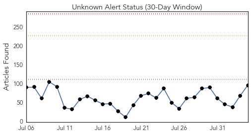
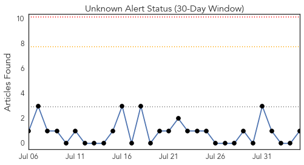
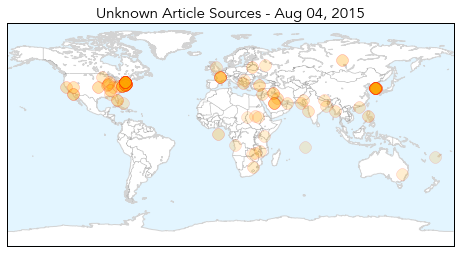

Toggle navigation
Early Warning
Daily Alerts
Unknown
Aug 04, 2015
Compare to:
-
Dengue Fever
Hemmorhagic Fever
Mold/Fungal Infection
Influenza
Meningitis
Pertussis / Whooping Cough
Middle East Respiratory Syndrome
Cholera
Hepatitis
Chikungunya
Yellow Fever
Bubonic Plague
West Nile Virus
Swine Flu
Ebola
Measles
Mumps
30 Day Trends
Web: 0
alerts
, 0
warnings
Twitter: 0
alerts
, 0
warnings
Top Articles:
Showing top 50 articles...
0.997
(LEAD) S. Korea reports no additional MERS cases for 30th consecutive day
0.995
3 More People Die, 10 More Sick in Bronx Legionnaires’ Outbreak, as Residents Pack Town Hall Meeting
0.991
NYC outbreak of Legionnaires’ disease kills seven
0.990
Seven dead in Bronx in Legionnaires' Disease outbreak
0.989
South Korea president replaces health minister after Mers outbreak, Government & Economy
0.988
Legionnaires' disease in New York: what is it and how does it spread?
0.988
South Korea's president replaces health minister, widely blamed for mishandling Mers outbreak, East Asia News & Top Stories
0.987
South Korea President replaces health minister after MERS outbreak
0.987
South Korea’s president dumps health minister after poor response to Mers outbreak
0.987
The Doctor Is In: Legionnaires' outbreak must be contained
0.985
S. Korea president swaps health minister after MERS outbreak
0.981
S. Korean minister sacked over Mers crisis, Asia News & Top Stories
0.980
Death toll in South Bronx Legionnaires' disease outbreak rises to 7, officials say
0.980
Death toll rises in outbreak of Legionnaires' disease in NYC
0.978
Seven dead, 86 infected as New York officials identify and disinfect cooling towers filled with Legionnaires bacteria
0.975
Patients from UAE return to South Korea as Mers scare subsides
0.974
The Portland Press Herald / Maine Sunday Telegram
0.966
Legionnaires outbreak kills seven in New York
0.965
City vows action to prevent Legionnaires' outbreaks
0.958
Legionnaire's Disease: NYC Outbreak Leaves 7 Dead, Michigan Woman Also Dead
0.955
NYC targets cooling systems linked to Legionnaires' outbreak
0.949
Death toll from Legionnaires’ disease outbreak in NYC rises to 7
0.946
Legionnaire’s Disease Death Toll Rises to 7 in New York
0.943
USA needs to take immediate steps to fight super bugs, experts say
0.939
7 people with Legionnaires’ disease have died in NY outbreak
0.934
7 Total Dead From Legionnaires' As Officials Announce 3 More Deaths
0.933
Number of Legionnaires' Cases Rises to 86 Amid Deadly Outbreak
0.929
Death toll from legionnaires' disease outbreak in New York climbs to seven
0.925
Legionnaires’ disease outbreak claims fourth victim in New York
0.924
What you need to know about the Legionnaire's disease outbreak in NYC
0.917
Chicago Tribune
0.917
Chicago Tribune
0.917
Chicago Tribune
0.917
Chicago Tribune
0.914
New York legionnaires' disease outbreak leaves seven dead, officials say
0.898
CDC: Coordinated approach could cut projected ‘superbug’ infections in half
0.889
South Bronx Legionnaires' disease death toll rises to seven
0.884
NYC health official expects more Legionnaires’ disease cases
0.870
Two-dose chickenpox vaccination program reduces US outbreaks by 78%
0.865
Better Control of Drug-Resistant Germs Could Save Thousands of Lives: CDC
0.859
The Chosun Ilbo (English Edition): Daily News from Korea
0.856
whole pig
0.853
86 cases of deadly Legionnaires’ disease confirmed in South Bronx
0.846
S. Korean health minister replaced by doctor after MERS
0.818
De Blasio Pushes Legislation to Combat Legionnaires' Disease Outbreak
0.813
Virus-like nanoparticle vaccine effective against RSV
0.804
Four dead from Legionnaires' disease in NY
0.804
Park nominates medical professor as new health minister
0.798
Turbidity Alerts Las Vegas Area To Water-Borne Diseases
0.798
Belarus suspends pork imports from Russia's Vladimir Oblast
Top Tweets:
No tweets found for Aug 04, 2015
Web/News Articles

Tweets

Article Locations

Article Confidences